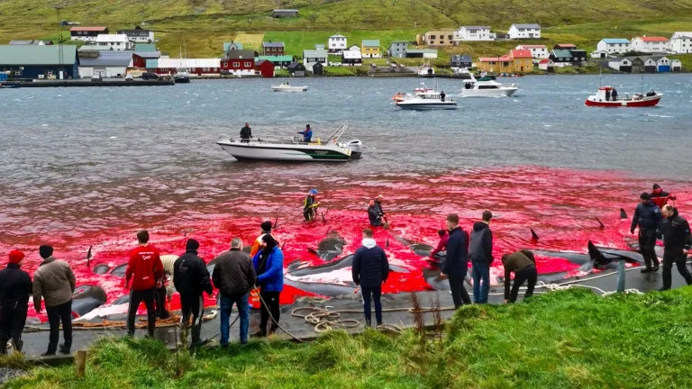

12 de marzo de 2026
Defensa de Ballenas
La campaña Defensa de Ballenas tiene como objetivo proteger a distintas especies frente a la caza ilegal, la contaminación y las amenazas generadas por la actividad humana. Nuestro equipo realiza monitoreos constantes en zonas de migración, colabora con organizaciones internacionales y participa en programas de investigación para obtener información sobre el comportamiento y estado de las poblaciones. Además de las tareas de conservación, desarrollamos actividades educativas para concientizar sobre la importancia de las ballenas en el equilibrio de los ecosistemas marinos y promover acciones que garanticen su protección a largo plazo.
Apoyar Proyecto →